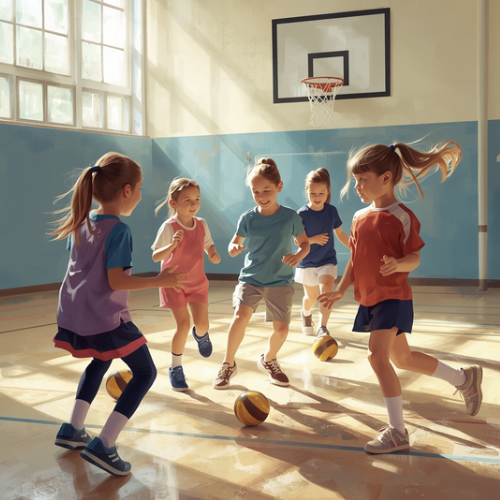

Building Teacher Confidence to Support ADHD in Primary School PE
What we know about supporting pupils with ADHD
Helping pupils with attention-deficit/hyperactivity disorder (ADHD) is now a standard part of making schools more inclusive (Wilson et al., 2024). Research suggests that teachers are more likely to use supportive strategies when they believe those strategies will be effective.
In a survey of 336 teachers, Szep et al. (2021) found that training, school-related factors, and teachers' beliefs about what works were associated with the use of supportive strategies. Teachers' knowledge of ADHD and access to relevant professional learning also appear to play an important role in shaping practice (Akdag, 2023; Ward et al., 2021).

PE teacher with a class on a sports field. AI-generated image created in Canva.
Why PE matters for pupils with ADHD
Physical education (PE) enables pupils to learn through movement, connect with others, and build social skills (Rudd et al., 2021; Vickerman & Maher, 2017). For pupils with ADHD, PE can also be a chance to succeed and enjoy physical activity (Taylor et al., 2019).
A lot of what we know about supporting pupils with ADHD comes from classroom-based research, but PE brings different challenges. In PE, the physical space can add another layer of complexity, as pupils move between activities, equipment, groups, and different areas of the lesson.
Pupils moving across a wide outdoor PE space. AI-generated image created in Canva.
The challenges teachers face
PE lessons can be especially challenging when they require waiting, following instructions, managing emotions, or dealing with competition and busy settings (Villa-de Gregorio et al., 2023). Teachers often have to quickly decide when to help, how to change an activity, and how to support each pupil while keeping the class going.
This means supporting pupils with ADHD in PE is not only about knowing what strategies to use. It is also about having the confidence to apply those strategies flexibly in practice.
As part of my master's research, I interviewed nine primary school PE teachers to understand this area in more depth, focusing on how they developed confidence in their pedagogical decisions through experience and support from the wider school system.
How pedagogical confidence develops
Teachers often said their confidence grew through experience. Rather than relying only on formal training, they became more confident by repeatedly teaching pupils with ADHD and learning from those experiences over time.
This process was not always straightforward. Teachers described using trial and error, reflecting on lessons, and making changes based on what seemed to help individual pupils. When lessons went well, this gave them reassurance that their approach was working. When things were more difficult, they had to rethink, adapt, and try again.
Confidence seemed to develop through learning how to respond flexibly to changing situations, rather than through becoming more certain or simply more experienced. Teachers also became more confident as they got to know pupils better, understanding how individuals responded to different tasks, instructions, and lesson environments.
Learning from others was also important. Teachers described watching colleagues, sharing ideas, and drawing on staff support. These interactions helped them build practical knowledge, reflect on their teaching, and feel more able to adapt their practice.
Why school context matters
Experience helped teachers build confidence, but the school context also shaped how well they could support pupils with ADHD in PE.
Teaching assistants were often described as essential. When support staff were available and understood pupils' needs, teachers felt better able to provide targeted support without disrupting the rest of the lesson.
Class size also mattered. Larger groups made it harder to give individual attention, notice problems early, and make quick adjustments during lessons. Teachers also explained that clear behaviour expectations and support across the wider school made it easier to respond consistently when challenges arose.
Professional development was another important factor. Many teachers felt that most training was designed for classroom settings and did not reflect the fast-moving, practical nature of PE. They suggested that PE-specific CPD or INSET could provide more practical ideas and tips to use in lessons. For many teachers, much of their learning came from experience, observation, and working with colleagues.
Practical Strategies to Support Pupils with ADHD
In my study, teachers built confidence by trying strategies, noticing how pupils responded, and adapting their practice over time. The points below turn that learning into practical actions teachers can use in PE lessons.
Many of these strategies can support all pupils, but they may be especially important for pupils with ADHD because they reduce barriers linked to waiting, transitions, working memory, emotional regulation, and busy or competitive lesson environments.

Pupils taking part in an indoor PE activity. AI-generated image created in Canva.
- Reduce waiting time. Plan activities so pupils spend more time moving and less time standing in lines, where focus can drift and frustration can build.
- Reduce the pressure of competition. Adjust scoring, teams, or rules when the competitive element is making it harder for a pupil to manage emotions.
- Give pupils space when they are struggling. Use a quieter area, a smaller group, or a short reset so pupils can regulate emotions and rejoin the activity.
- Use demonstration to support focus. Show the activity and use brief prompts or visual cues so pupils can see what to do without relying only on verbal instructions.
- Use predictable routines for transitions. Keep starts, stops, equipment changes, and group changes clear so pupils know what to do next.
- Talk to colleagues about what works. Share observations with PE colleagues and support staff so useful strategies can be repeated and adapted.
How can teachers be better supported?
Supporting pupils with ADHD in PE can be complex and often depends on the situation. Teachers in this study also spoke about the positive side of PE, describing how some pupils really thrived when lessons were adapted in ways that helped them experience success.
Being a confident teacher does not mean having all the answers. Instead, it means being able to respond flexibly to situations that can change quickly and sometimes feel unpredictable. Confidence often grows through experience, but it becomes stronger when teachers have the right support around them.
Inclusive PE is not something that rests on individual teachers alone. Schools also play an important role in creating the conditions that help teachers feel supported, keep learning, and respond confidently to pupils' needs. When that support is in place, PE is more likely to become an inclusive and positive space for all pupils.
Teachers discussing PE activities and support strategies. AI-generated image created in Canva.
That support can take different forms. In schools, it might involve mentoring, professional conversations, or working alongside colleagues in lessons so that practical strategies can be shared and developed in context. More formal support matters too. PE-specific training, INSET, and accessible options such as online courses can help teachers build a stronger foundation for supporting pupils with ADHD in PE. This may be especially important for newer teachers who are still developing confidence in their teaching.
This blog draws on research developed in collaboration with Dr Stephanie Tibbert and Dr Alyx Taylor at Health Sciences University, who are co-authors on related academic outputs.
References
- Akdag, B. (2023). Exploring teachers' knowledge and attitudes toward attention deficit hyperactivity disorder and its treatment in a district of Turkey. Cureus, 15(9), e45342.
- Rudd, J. R., Woods, C., Correia, V., Seifert, L., & Davids, K. (2021). An ecological dynamics conceptualisation of physical "education": Where we have been and where we could go next. Physical Education and Sport Pedagogy.
- Szep, A., Dantchev, S., Zemp, M., Schwinger, M., Chavanon, M.-L., & Christiansen, H. (2021). Facilitators and barriers of teachers' use of effective classroom management strategies for students with ADHD. Sustainability, 13(22), 12843.
- Taylor, A., Foreman, D., & Alder, T. (2019). An exercise program designed for children with attention deficit/hyperactivity disorder for use in school physical education. Mental Health and Physical Activity, 16, 105-114.
- Villa-de Gregorio, M., Sanchez-Serrano, J. M., Gomez-Marmol, A., & Gonzalez-Villora, S. (2023). Attentional neurodiversity in physical education lessons. Sustainability, 15(6), 5603.
- Vickerman, P., & Maher, A. (2017). A holistic approach to training for inclusion in physical education. In A. Morin, C. Maiano, D. Tracey, & R. G. Craven (Eds.), Inclusive physical activities: International perspectives.
- Ward, R. J., Kovshoff, H., & Kreppner, J. (2021). School staff perspectives on ADHD and training. Emotional and Behavioural Difficulties, 26(3), 306-321.
- Wilson, C., Green, C., Toye, M., & Ballantyne, C. (2024). Teachers' perceptions and practices towards inclusive education for children with ADHD in Scotland. International Journal of Disability, Development and Education, 71(7), 1061-1075.